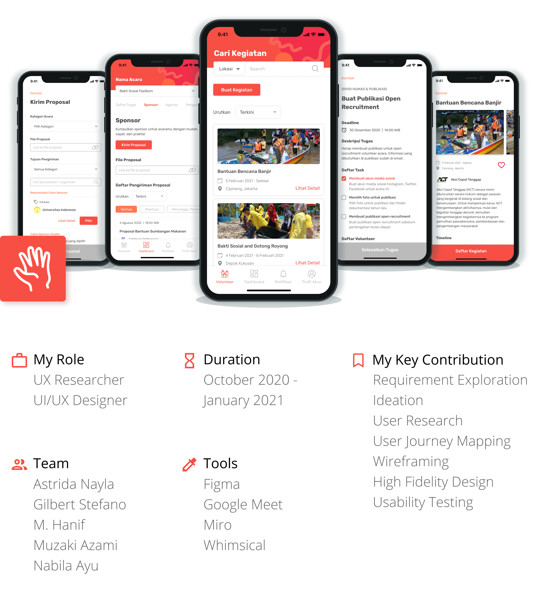

ConTribe

Background
This project was a System Interaction Class group assignment that I took part in my fifth semester at Uni. We were given a chance to pick a specific theme to work with, in which we chose 'Disaster Recovery'. We then proceeded to decide 'Student Volunteering' as our main topic.How might we provide student volunteers and organizers a platform to help them manage their time and effort effectively?
Design Process
Based on User-Centered Design Process by Interaction Design Foundation.Project Goals
To further help define our goals, we made and analyze a couple of value proposition canvas. It occurs to us then that because our user base consists of both volunteer and organizer, we need to revolve our would-be features around their key interactions.Goal #1: Connect potential volunteers with existing volunteer activities.
Goal #2: Link the organizer with a suitable sponsor.
Goal #3: Help maximize the number of volunteer applications.
Goal #4: Allocate tasks clearly.
User Research
In this step, we did qualitative research by interviewing 5 individuals who fit our end-user criteria. All of them ranging from high school to university students.Communication is key
Communication is what makes or breaks a successful volunteer activity. It is crucial to maintain, even though there will be volunteers who do not have the confidence to do so.
Idea: Build a notification center where organizers could easily input and broadcast updates.
Different schedules
Keeping that line of communication becomes tricky when it is hard to find time in between all of the volunteers' different schedules.
Idea: Build a dashboard to keep track all the coming tasks and agendas related to each activity. Organizers would need to input the time for each agenda in order to mark the availability status of the following time slot.
Funding is challenging
It is tough to connect with sponsors, even though many companies are willing to become one because they have social obligations.
Idea: Help automate proposal submissions by providing a list of info on companies/organizations that will be willing to be a sponsor.
From now onwards, I will only describe the scope of my part in this project. Namely, developing the "Allocate Tasks" feature.
User Journey Mapping
By keeping in mind the as-is system of 'Allocating Tasks', I made a user journey mapping on how organizers would allocate tasks to the volunteers through our app.Wireframing & Prototyping
After analyzing our research results and specifying user requirements, I develop the wireframe and prototype on Figma. You can visit the prototype here.Usability Testing
We performed usability testing with 4 people that matches our user personas, whether they have experience as a volunteer or an activity organizer. Following the interview, we conduct quantitative evaluation by measuring each feature's SUS score. The 'Allocating Tasks' feature receives an astounding average score of 96,25 out of 100.